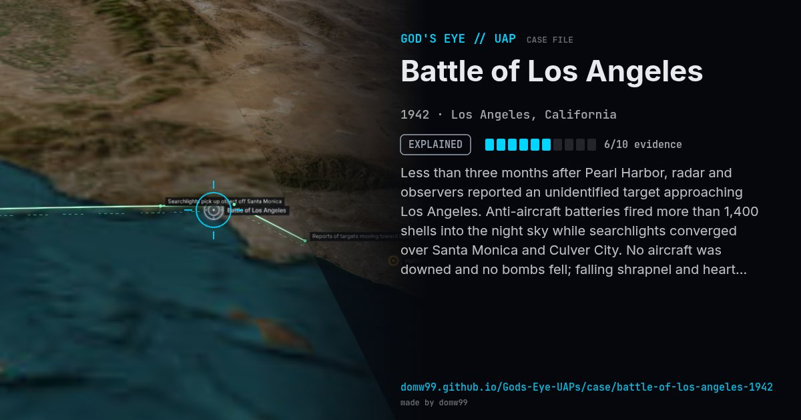

Battle of Los Angeles
EXPLAINED

Less than three months after Pearl Harbor, radar and observers reported an unidentified target approaching Los Angeles. Anti-aircraft batteries fired more than 1,400 shells into the night sky while searchlights converged over Santa Monica and Culver City. No aircraft was downed and no bombs fell; falling shrapnel and heart attacks caused deaths on the ground.
Explanation
The Navy attributed the alarm to "war nerves" after a Japanese submarine shelled the Ellwood oil field the night before; a weather balloon is thought to have started the barrage. The famous Los Angeles Times photo was heavily retouched.
What was seen
Shape: Unidentified targets / searchlight cone
Witnesses: Thousands; coastal anti-aircraft batteries
Duration: About 1 hour